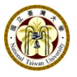
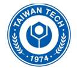

University of Guelph
Guelph, Ontario, Canada
Master of Engineering, Computer Engineering
Feb 2025 - Jan 2026
Focus: software systems, mobile development, and embedded systems.
Guelph, Ontario, Canada
Master of Engineering, Computer Engineering
Feb 2025 - Jan 2026
Focus: software systems, mobile development, and embedded systems.

Taipei, Taiwan
Master of Science, Computer Science and Information Engineering
Sep 2019 - Apr 2022
Research-based program focused on computer vision, deep learning, and AI-based localization.

Taipei, Taiwan
Graduate Study, Automation and Control
Sep 2018 - Jan 2019
Graduate coursework in Automation and Control, later redirected toward Computer Science and software engineering.